靶机地址：Hackxor: 1 ~ VulnHub
主机发现
使用 arp-scan 扫描局域网存活主机，发现靶机 IP：
arp-scan -l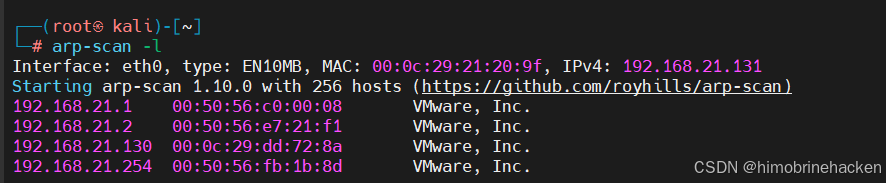
130 是靶机。
端口扫描
nmap 全端口扫描：
nmap --min-rate 10000 -p- 192.168.21.130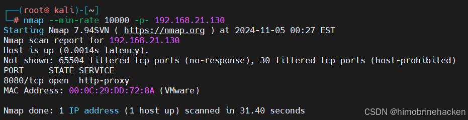
服务扫描
扫描端口上的服务版本：
nmap -sV -p 80,8080,5432 192.168.21.130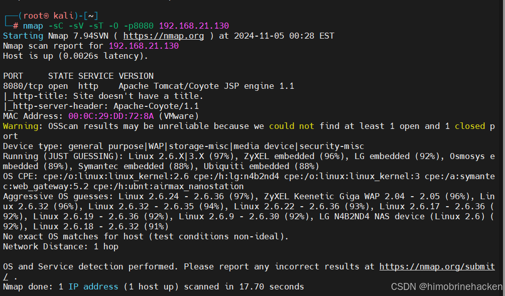
漏洞扫描
nmap 漏洞脚本扫描：
nmap --script vuln -p 80,8080,5432 192.168.21.130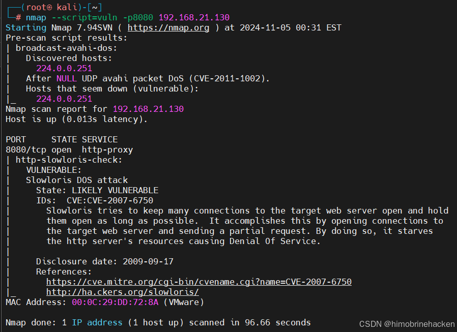
Hosts 配置
由于靶机搭建不完全，部分域名需要手动绑定。网上查找相关信息后，配置 /etc/hosts：
echo "192.168.21.130 wraithmail utrack cloaknet gghb hub71" >> /etc/hosts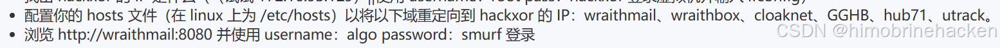
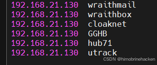
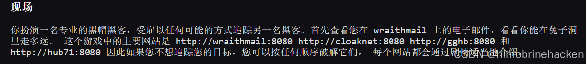
Wraithmail 代理
访问 wraithmail:8080：
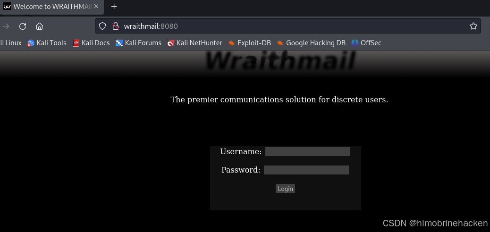
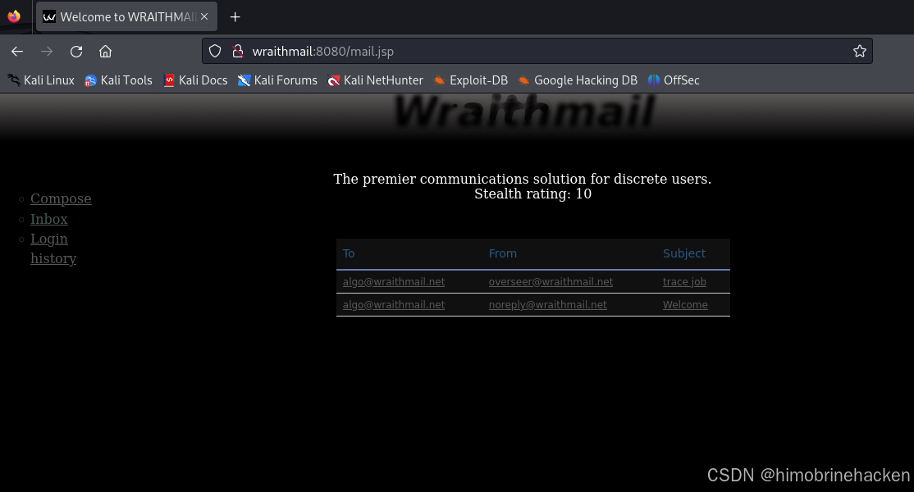
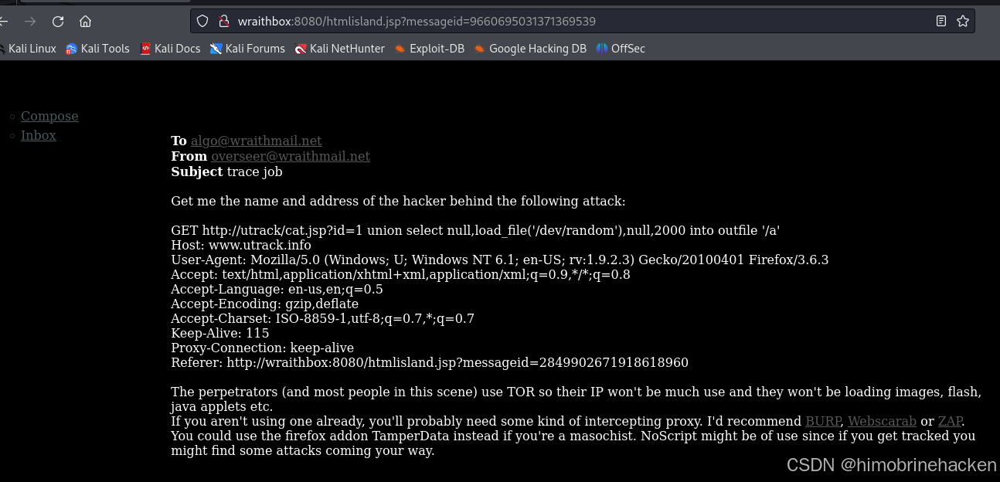
通过 wraithmail 发送消息，代理请求到内部服务。抓包分析数据包：
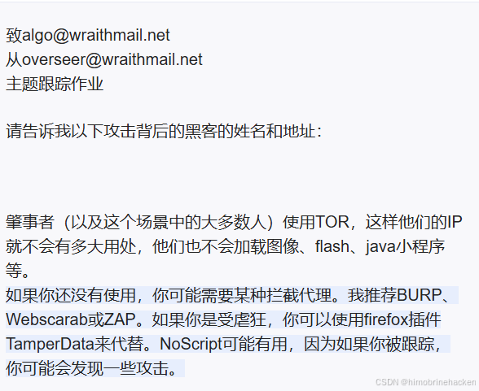
数据包内容如下：
GET http://utrack/cat.jsp?id=1 union select null,load_file('/dev/random'),null,2000 into outfile '/a'
Host: www.utrack.info
User-Agent: Mozilla/5.0 (Windows; U; Windows NT 6.1; en-US; rv:1.9.2.3) Gecko/20100401 Firefox/3.6.3
Accept: text/html,application/xhtml+xml,application/xml;q=0.9,*/*;q=0.8
Accept-Language: en-us,en;q=0.5
Accept-Encoding: gzip,deflate
Accept-Charset: ISO-8859-1,utf-8;q=0.7,*;q=0.7
Keep-Alive: 115
Proxy-Connection: keep-alive
Referer: http://wraithbox:8080/htmlisland.jsp?messageid=2849902671918618960注意 Referer 字段。
SQL 注入（utrack）
利用 wraithmail 代理进行 SQL 注入，使用 union select 注入：
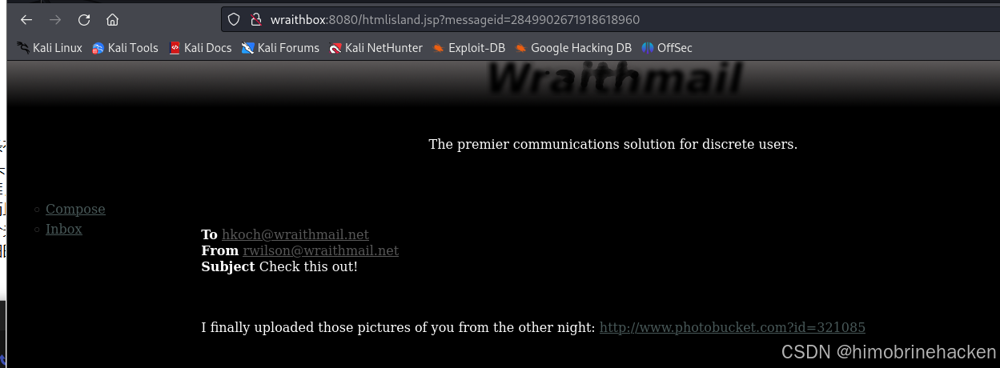
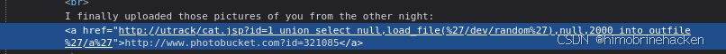
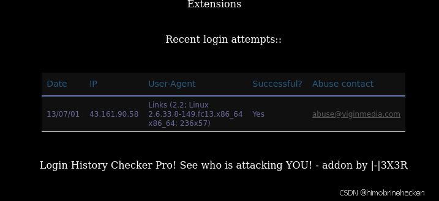
IP: 43.161.90.58，进入下一关。
Cloaknet 关卡
访问 http://cloaknet:8080/：
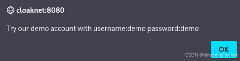
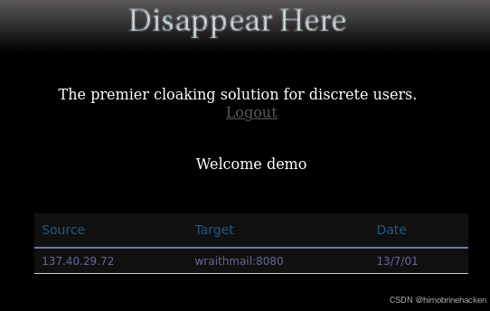
应该是 SQL 注入。
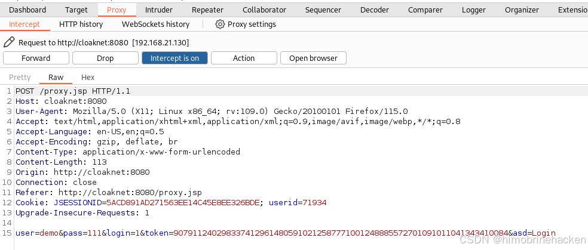
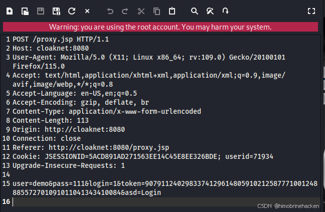
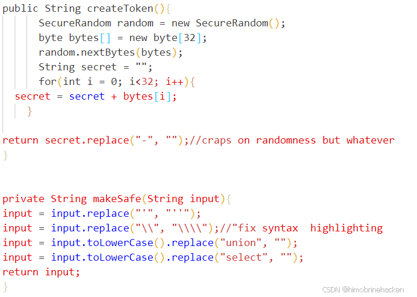
替换单引号转义符，union select 注入。后续内容请自行测试。
后续关卡提示
GGHB 系列
- 您可能需要使用 wraithmail 发送一些消息。
- 一个电子邮件地址是公开的，另一个可以从用户名中猜出。您可以使用信息泄漏来检查电子邮件地址是否存在。
- 受害者不会点击链接，但您可以在消息中输入 JavaScript。
- 如果您的攻击是基于时间/顺序的，请记住 TOR 速度慢且不可靠。
- 有时偷饼干并不能解决问题。
- 管理面板可能在哪里？
Hub71
- 开发人员了解一点安全性，只信任 .txt，但除此之外是一个糟糕的程序员。
- 尝试理解本网站使用的 CSRF 辩护。
- 有时你必须做一些非常不合逻辑的事情才能成功。
- 我保证，这个水平并非不可能。
最后两关内容暂缺，待后续补充。